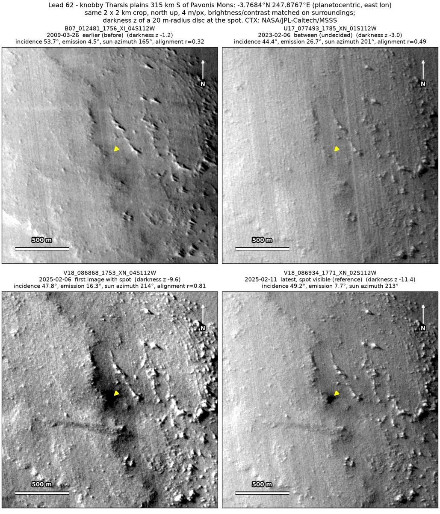
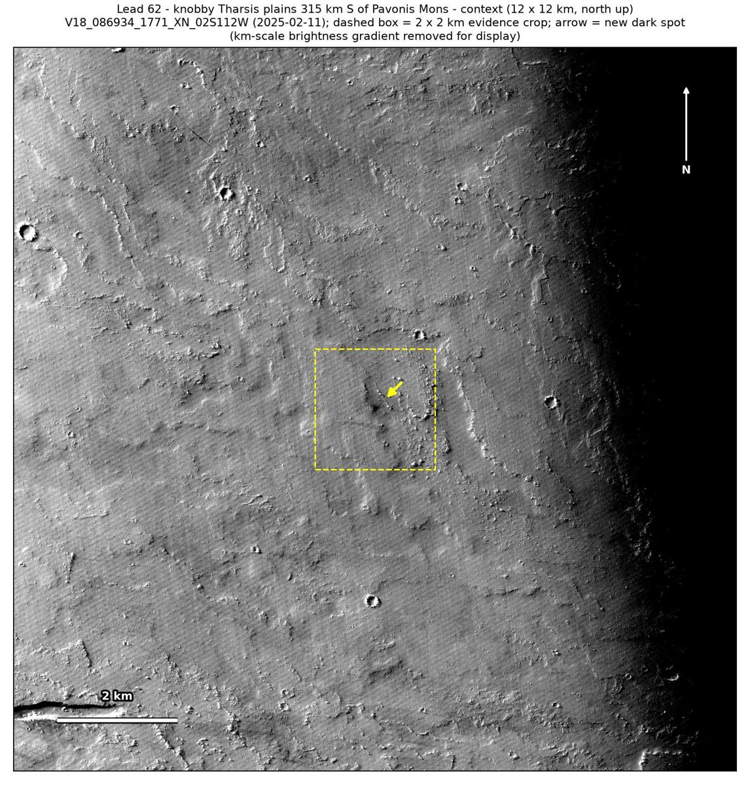

Professor of Mathematics
Paata Ivanisvili
Department of Mathematics, University of California, Irvine

← Possible new impact sites on Mars
Candidate 62: Knobby Tharsis plains 315 km south of Pavonis Mons
Promising · roughly 60%

What changed. A compact dark spot with a core about 40 to 50 m across, faint dark rays and a diffuse dark zone appeared among the knobs of the Tharsis plains, 315 km south of Pavonis Mons, between March 2009 and February 2025, in two CTX images from two orbits five days apart.
Why it may be a new impact. The March 2009 image shows only a faint mark there, while a knob 300 m to the east shows in it. The two February 2025 images, taken five days apart under the same sun, both show the spot, and a fresh impact after the February 2023 image is what fits its faint rays best.
- Location
- 3.768° S, 247.877° E (112.123° W)
- Absent
- 26 March 2009
- Present
- 6 February 2025 and 11 February 2025
- Size
- Dark core about 40 to 50 m across, with faint rays and a diffuse dark zone about 400 m across
- Confidence
- Promising candidate; roughly 60% that it is a new impact.
- Caveat
- A poor February 2023 image, oblique and heavily compressed, shows only a faint dark blob about 25 m across at the same place, so the spot may have formed before 2023 and be under-shown there, or a small older dark feature may have been darkened and enlarged by the wind. The March 2009 image scores low for alignment and has the sun from a different direction. It lies outside every footprint of the high-resolution HiRISE camera; the nearest ends 23.9 km away. Like every candidate here, it is unconfirmed: see the caveat.
